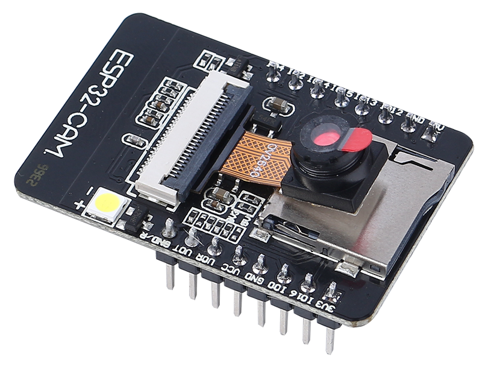
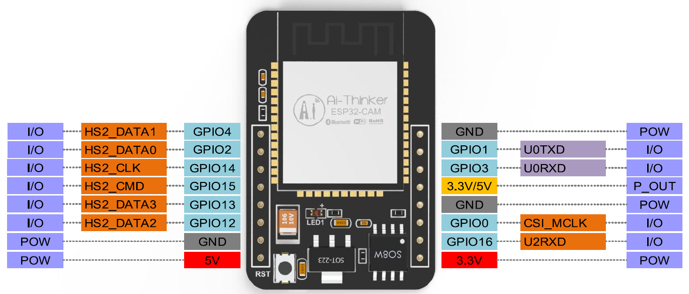

Note
Hello, welcome to the SunFounder Raspberry Pi & Arduino & ESP32 Enthusiasts Community on Facebook! Dive deeper into Raspberry Pi, Arduino, and ESP32 with fellow enthusiasts.
Why Join?
Expert Support: Solve post-sale issues and technical challenges with help from our community and team.
Learn & Share: Exchange tips and tutorials to enhance your skills.
Exclusive Previews: Get early access to new product announcements and sneak peeks.
Special Discounts: Enjoy exclusive discounts on our newest products.
Festive Promotions and Giveaways: Take part in giveaways and holiday promotions.
👉 Ready to explore and create with us? Click [here] and join today!
ESP32 CAM
{kind=link}

The ESP32-CAM is a very small camera module with the ESP32-S chip that costs approximately $10. Besides the OV2640 camera, and several GPIOs to connect peripherals, it also features a microSD card slot that can be useful to store images taken with the camera or to store files to serve to clients.
The module can work independently as the smallest system, with a size of only 27*40.5*4.5mm, and a deep sleep current as low as 6mA.
ESP32-CAM can be widely used in various IoT applications, suitable for home smart devices, industrial wireless control, wireless monitoring, QR wireless identification, wireless positioning system signals and other IoT applications. It is an ideal solution for IoT applications.
Technical Specifications
Module Model |
ESP32-CAM |
Package |
DIP-16 |
Size |
27*40.5*4.5（±0.2）mm |
SPI Flash |
default 32Mbit |
RAM |
Internal 520KB + External 8MB PSRAM |
Bluetooth |
Bluetooth 4.2 BR/EDR and BLE standards |
Wi-Fi |
802.11 b/g/n/e/i |
Support Interfaces |
UART、SPI、I2C、PWM |
Support TF Card |
up to 4G |
IO Pins |
9 |
Serial Port Speed |
default 115200 bps |
Image Output Format |
JPEG(only OV2640 support),BMP,GRAYSCALE |
Spectrum range |
2400 ~2483.5MHz |
Antenna Type |
On-board PCB antenna, gain 2dBi |
Transmit Power |
802.11b: 17±2 dBm (@11Mbps) |
802.11g: 14±2 dBm (@54Mbps) |
|
802.11n: 13±2 dBm (@MCS7) |
|
Receive Sensitivity |
CCK, 1 Mbps: -90dBm, |
CCK, 11 Mbps: -85 dBm |
|
6 Mbps (1/2 BPSK): -88 dBm |
|
54 Mbps (3/4 64-QAM): -70dBm |
|
MCS7 (65 Mbps, 72.2 Mbps): -67dBm |
|
Power Consumption |
Flash off: 180mA@5V, |
Flash on and brightness to maximum: 310mA@5V |
|
Deep-sleep: the lowest power consumption can reach 6mA@5V |
|
Moderm-sleep: minimum 20mA@5V |
|
Light-sleep: minimum 6.7mA@5V |
|
Security |
WPA/WPA2/WPA2-Enterprise/WPS |
Power supply range |
4.75-5.25V |
Operating Temperature |
-20 ℃ ~ 70 ℃ |
Storage Environment |
-40 ℃ ~ 125 ℃ , < 90%RH |
ESP32-CAM Pinout
The following figure shows the ESP32-CAM pinout (AI-Thinker module).
{kind=link}

There are three GND pins and three pins for power: 3.3V, 5V and either 3.3V or 5V.
GPIO 1 and GPIO 3 are the serial pins. You need these pins to upload code to your board.
Additionally, GPIO 0 also plays an important role, since it determines whether the ESP32 is in flashing mode or not. When GPIO 0 is connected to GND, the ESP32 is in flashing mode.
The following pins are internally connected to the microSD card reader:
GPIO 14: CLK
GPIO 15: CMD
GPIO 2: Data 0
GPIO 4: Data 1 (also connected to the on-board LED)
GPIO 12: Data 2
GPIO 13: Data 3
Note
Please make sure that the input power of the module is at least 5V 2A, otherwise the picture may have water lines.
The ESP32 GPIO32 pin controls the camera power. When the camera is working, please pull GPIO32 low.
Since GPIO0 is connected to the camera XCLK, please leave GPIO0 in the air when using it, and do not connect it to high or low level.
The default firmware is already included in the factory, and no additional download is provided. Please be careful if you need to re-burn other firmware.
Document
Schematic diagram: ESP32-CAM schematic diagram
Camera specification (English version): ov2640_ds_1.8
Note
All information above comes from Ai-Thinker